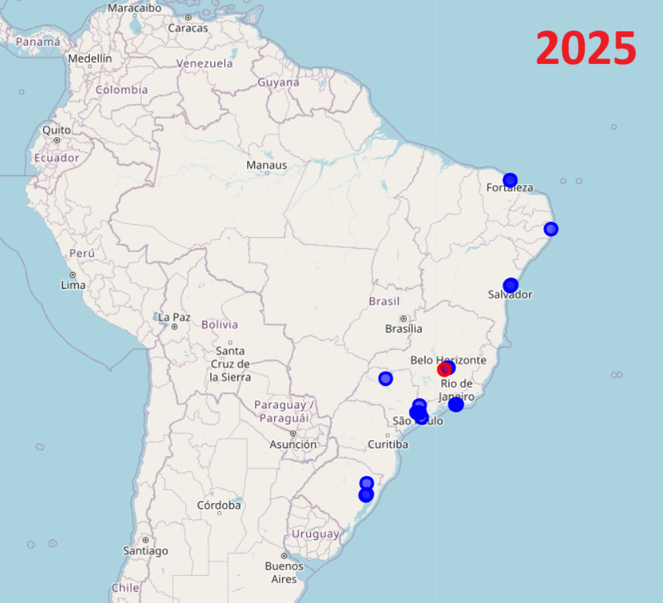

Dashboard Supermarket Sales Dataset (Kaggle)
Projetos em Power BI
Projetos em SQL
Python – Análise de Futebol com Dados Abertos
Projeto em Python para análise de desempenho de clubes de futebol usando dados históricos. As análises incluem manipulação com Pandas e visualizações com Matplotlib e Seaborn.
📂 Ver repositório no GitHub📥 Baixar projeto (.zip)
📊 Visualizações:
🧾 Trecho do código:
import pandas as pd
import matplotlib.pyplot as plt
df = pd.read_csv('dados_brasileirao.csv')
clubes = df['clube'].value_counts().head(10)
clubes.plot(kind='barh', title='Top 10 clubes com mais partidas')
plt.xlabel('Número de jogos')
plt.show()